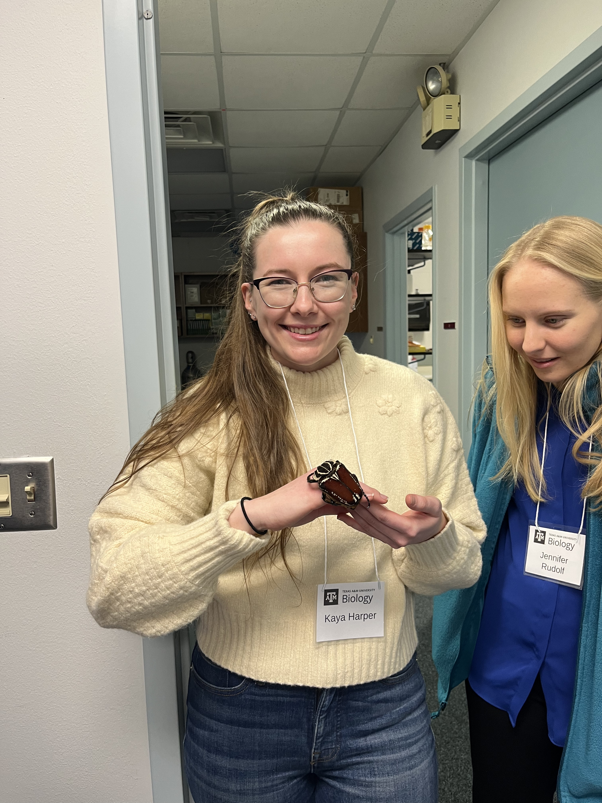

Research
My research integrates evolutionary genomics, epigenetics, and ecology to understand how environmental variation shapes adaptation across species and timescales. I’m particularly interested in how environmental flux influences the evolution of genomes, epigenetics, and phenotypic plasticity, and how these processes contribute to resilience or vulnerability under climate change.
I approach these questions using comparative genomics, next generation sequencing technology, behavioral assays, and fieldwork in both aquatic and terrestrial systems.
Interests
Genomics · Epigenetics · Population Genetics · Bioinformatics · Evolutionary Biology · Environmental Adaptation · Comparative Genomics · Conservation Genomics · Phylogenetics
Current projects:
Astyanax Epigenetics: Exploring how ecological conditions shape patterns of DNA methylation across cave and surface populations.
Transcriptional Plasticity in a Changing Environment: Investigating how environmental conditions influence gene expression responses and the evolution of plasticity in Astyanax mexicanus.
Genomes and Gene Flow: Studying how environmental gradients and landscape structure affect population connectivity across Bombus species.
Email: kayaharper@tamu.edu
University: Texas A&M University, College Station
Skills
Genetics & Genomics
Evolutionary Biology (Genome structure evolution, Mammalian Sex Chromosome evolution), MethylSeq (Bismark, bowtie2, samtools, Methylkit), RNASeq (FastQC, DESeq2), Primer optimization, Isothermal assembly, DNA/RNA extraction, PCR, qPCR, Gel electrophoresis & imaging, Flow Cytometry, Tetrad sporulation, CRISPR/Cas9 Gene editing, Dissection microscopy, Cell and tissue culture growth & passaging
Field Work
Field Research Planning, Marine & Freshwater Field Sampling Techniques, Scuba Diving, Environmental Data Collection, Data Management, Permitting and Compliance, Equipment Maintenance, Field Safety, Species Identification, Wilderness First Aid
Data Science
Large dataset management (>20 TB), Bayesian statistics, Phylogenetics, Data Visualization, High-Performance Cluster (HPC) Computing
Programming
RStudio · Linux · MatLab
Soft Skills
Public outreach, Science communication, Lesson planning, Academic planning, Team Coordination, Leadership, Time Management, Public Speaking, Strategic Planning, Project Management, Graphic Design
Research
Publications
Maximos Chin, Matthew Marano, Kenzie G. Laird, Kaya Harper, Michelle M. Jonika, Heath Blackmon. Fusions of Autosomes with Sex Chromosomes are Disfavored in Mammals. PLoS Biology, 2025.
Presentations
2025
Cavefish and Starvation: The Epigenetic Puzzle of Astyanax mexicanus — Student/Postdoc Research Conference, Texas A&M University (Poster)
2022
Creating a Food Carbon Emission Footprint for Lehigh University Dining Services — Sustainability Symposium, Bucknell University (Talk)
Studying the efficacy of CRISPR/Cas9 with homologous genes from S. paradoxus and S. cerevisiae — Department of Biology Student Research Week, Lehigh University (Poster)
Elucidating Mycobacteriophage Taptic Gene Functions with the SEA-GENES Research Project at Lehigh University — SEA-PHAGES Symposium, Howard Hughes Medical Institute (Poster)
2021
Understanding tetrad sporulation dynamics in S. paradoxus and S. cerevisiae — Department of Biology Student Research Week, Lehigh University (Poster)
Education & Experience
Education
Doctor of Philosophy in Biology
Texas A&M University, United States | 2023 – Present
Honors B.S. in Molecular Biology (Magna Cum Laude)
Lehigh University, United States | 2018 – 2022
Minor in Earth and Environmental Sciences
Honors & Awards
- First Year Biology Department Scholarship – Texas A&M University
- Michael E. Family Undergraduate Scholar Award – Lehigh University
- Biology Department Honors – Lehigh University
- Dean's List Recipient – Lehigh University
- Magna Cum Laude – Lehigh University
Certifications
- NOLS Wilderness First Aid Certified
- PADI Open Water Certified
- CPR / Epinephrine Administration
Pictures
A collection of photos from conferences, research activities, and academic events.
Click on any image to view in full size (placeholder images - replace with actual photos)